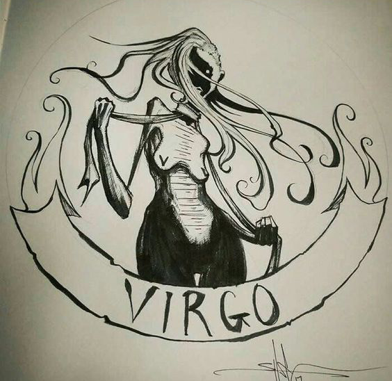
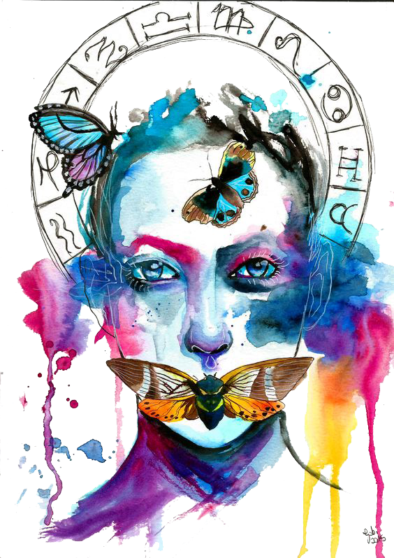

Picky Virgo, love can be a challenge when your high standards get involved. As the zodiac’s perfectionist, it’s hard for anyone to measure up to your criteria. You’d rather be alone than settle—a great attitude, as long as you keep your expectations realistic.
 The cool, calm, clarity that this sign exudes is why the symbol of the Maiden was chosen. Virgo people are mild mannered on the surface, but underneath there is a flurry of activity. Their minds are never quiet; always thinking, calculating, assessing. They loves making something out of nothing, nurturing and growing small things. They tend to be extremely detail oriented and particularly like producing something that is not only useful, but beautiful and skillful.
Virgo have a heart for their fellow man. They are kind, patient and love to laugh. They are not loud ‘look at me’ signs, but rather prefer to be the strong, silent type. They are creative thinkers and true family oriented people. Male Virgo, once they are committed to relationship never walk away (unless there is a betrayal, and even then it isn’t written in stone). Female Virgo are dedicated parents, often parenting other children in the neighborhood.